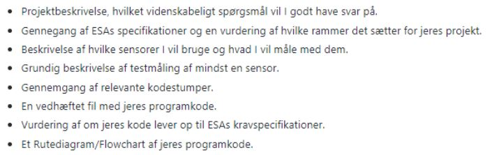

Astro Pi
Hvad går forløbet Astro Pi ud på?
I forløbet om Astro Pi har vi igennem ESA (European Space agency) og deres program MISSION SPACE LAB fået lov til at designe et projekt vi kunne tænke os at lave gennem deres raspberry pi computere instaleret på ISS (internatiol space station) projektet startede med en design og idegenerering. Idegenereringen endte ud i en ansøgning til ESA om udtagelse til at kører projektet gennem de to computere på ISS. Inden da har vi dog, gennem raspberry pi computere skolen har testet og afprøvet vores dataindsamling og data behandling.
Hvordan har forløbet været?
Vores gruppe er gennem ESA blevet udvalgt, dog er planen ikke at fortsætte. Vores forløb har på C-niveau en varrighed på ca 10 moduler og det ville ikke være nok til færdiggørelse af projektet og fritiden er for de fleste af os allerede udfyldt, desværre, men en lærrig process med seriøsitet uden lige og en god lærings platform at skulle udvikle noget til organisation der arbejder med alvorlige problemstillinger og ikke bare skulle udvikle det til sig selv og sine lærere.
Gruppens medlemmer: Frederik Lykke, Jens-Corneliu, Malde, Rasmus, Tjalfe og William.
Afslutning:
Som afslutning på hele forløbet er vi blevet stillet disse spørgsmål, som reaten af denne side ville svare på:
Projektbeskrivelse:
A vital factor for self-sustainable human life in an interplanetary area has been theorized to be the growing of vegetation as seen in the movie, “The Martian”. That is why, we would like our experiment to determine the optimal plants which are edible or can provide a plant-friendly environment. We plan to gather data about the temperature, pressure, light, and humidity aboard the space station in order to determine what plants are suitable to grow there.
Gennemgang af ESA's specifikationer:
ESA har opsat disse speciffikationer:


ESA har stillet en række krav til vores projekt og hvordan koden er udformet. Nogle af kravene er ret simple og er grundstenene for overhovedet at kunne gennemføre et projekt på deres computere, såsom at koden skal indeholde minimum en senseHat sensor eller kamera-modulet. Det er rimelig simpelt at overkomme, da vores projekt indeholder 3 forskellige sensor-moduler indbygget i astro-pi'en.
Et andet krav er måden at gemme og hente sin data tilbage. Dette skal gøres via Log-filer.
Derefter følger der en række krav ved brug af kameraet. Disse krav har ingen effekt på vores projekt, da vi udelukkende har interne målinger fra klimaet inde på selve rumstationen
Til sidst er der stillet en række krav om varrighed og duelighed. Krav om varrighed har en lille indflydelse på vores projekt i form af nogle ekstra linje kode, men selv uden krav var der nok blev sat en stop klods på af os for ikke at drukne i data og analyse arbejde til slut. Ift. duelighed skal der ikke være for store eksterne krav for en succesfuld gennemgang. Men da vores målinger kun vil foregå inde på selv rumstation er det også et krav som er "opfyldt".
Beskrivelse af sensore og deres funktion:
Vi gør brug af en Rasberry-pi, som inkluderer en Sense HAT LED matrix og tre Sense HAT senorer; en for fugtighed, en for tryk og en for temperatur til at monitorere undersøgelsen. Som programsprog gør vi brug af Python 3, der findes inde i Flight OS. Alle resultater af undersøgelsen bliver gemt i log filerne til videre analyse. Alt data bliver regulært noteret under den (Indsæt testens tidsperiode) testperiode. Vi har lavet vores kode sådan så den Rasberry-pi computer der er i ISS-stationen kan håndtere vores målinger.
Grundig beskrivelse af en sensor-måling:
På vores testmåling har vi målt tryk, temperatur og fugtighed udenfor over 1 minuts tid med 1 sekunds intervaller. vi kan se, at trykket forbliver det samme og stemmer overens, med den forventede værdi på 1013 kPa (det atmosfæriske tryk på jorden). Dette er forventet da højden og lokationen ikke ændrer sig, og vi befinder os på jorden. Fugtigheden stiger minimalt, dette kan forklares ved, at vi flytter astropi fra indenfor til udenfor, og da fugtigheden udenfor er højere end indenfor vil den stige (vi ser stigningen i målingen, da vi ikke lod astropi sidde udenfor, før vi begyndte målingen). Temperaturen falder med lidt under 2 grader celsius, dette forklares ved temperatur ændringen fra indenfor til udenfor, og da det blæste udenfor, vil der også være en coolingeffekt, som for temperaturen til at falde.
Gennemgang af relevante kodestumper:
De første fire linjer af kode (linje 1-6) er til for at importere data som Rasberry-pi enheden indsamler. F.eks. importerer “from sense_hat import SenseHat” den data sense_hat’en indsamler som for eksempel temperatur, tryk og fugtighed. “import subprocess” bliver brugt importerer extensions, hvilket gør så du kan skrive nye koder du ellers ikke ville kunne skrive. I dette tilfælde gør “import subprocess” så en extension fra pakken “gpiozero” bliver integreret. Denne extension er “CPUTemperature sense”, som måler temperaturen af CPU’en, der så ved hjælp af “CPUTemperature sense = SenseHat()” tilføjer dataen til resten af dataene fra sense_hat’en.
 De næste tre linjer kode (linje 9-11) beskriver tiden, hvor forsøget starter “Start_time = datetime.datetime.now()”, hvor den noterer hvilket tidspunkt på dagen forsøget starter på ved hjælp af “datetime.datetime.now()”. “now_time = datetime.datetime.now()” er til for at man senere i koden, ved hjælp af et while statement (linje 14), kan stoppe forsøget når “duration” er lig med 0. “duration = datetime.timedelta(seconds=10)” bliver brugt til at styre forsøgets varighed i linje 14.
De næste tre linjer kode (linje 9-11) beskriver tiden, hvor forsøget starter “Start_time = datetime.datetime.now()”, hvor den noterer hvilket tidspunkt på dagen forsøget starter på ved hjælp af “datetime.datetime.now()”. “now_time = datetime.datetime.now()” er til for at man senere i koden, ved hjælp af et while statement (linje 14), kan stoppe forsøget når “duration” er lig med 0. “duration = datetime.timedelta(seconds=10)” bliver brugt til at styre forsøgets varighed i linje 14.

Linje 17-22 gør brug af en “while true” kommando, som fortæller programmet at mens “now_time” har en lavere værdi end “start_time” plus “duration”, så skal Astro-pi enheden indsamle data for “temperatur”, “tryk” og “fugtighed”. Dette fungerer på den måde at duration formindskes til at den rammer værdien 0, hvilket gør så “now_time > start_time + duration” ikke længere er sandt, som så gør at Astro-pi’en ikke længere indsamler data. “now_time = datetime.datetime.now()” bliver opdateret efter dataen er indsamlet.

Linje 47-54 giver programmet kravene: hvis fugtigheden og temperaturen for en plante er over minimum-værdien og under maximum-værdien, så printes plantens navn for at vise, at planten kan leve på stationen.

Vedhæftning af koden:
link til kode
Passer vores kode til kravene?
Vi opfylder alle krav fremført på ESA's hjemmeside som der bliver referet til i forløbs planen. Dette inkluderer alders begrænsning gruppestørrelse i form af reelt fremmøde da vi har haft kontinuerlig sygsdom blandt medlemmer. Vores program kræver ikke bemandig eller opsyn. Vi opfylder nationalitetskravene. Vores program påkræver ikke bestemt forløbs tidspunkt eller lokation. derudover overskriver vi ikke grænserne for hardwarens formåen.